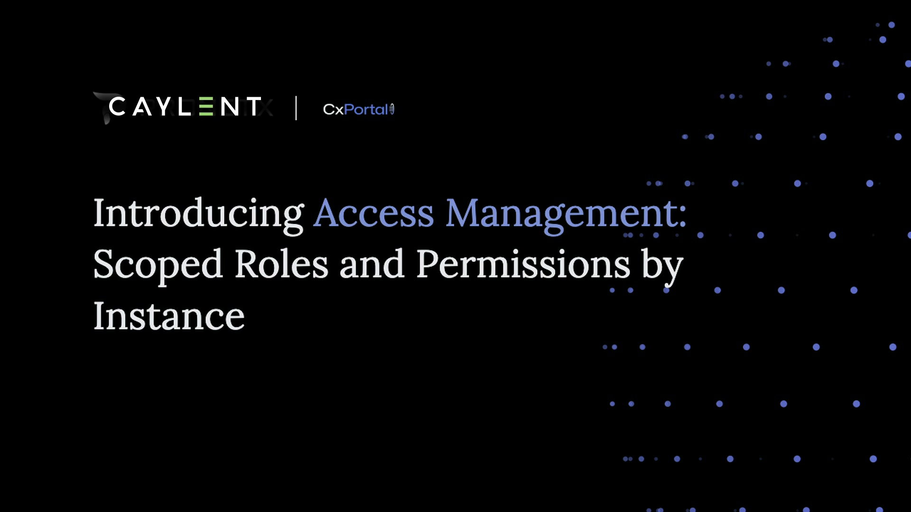

01 / Campaigns
Campaign Management
Build, govern, and monitor outbound engagement from one operating surface.
Use the business film to establish the “why,” then open the paired training film when the room wants the operational detail.
Build, govern, and monitor outbound engagement from one operating surface.
Move from article discovery to governed publishing without breaking the agent flow.

Control roles and instance permissions with a clear, auditable administration model.